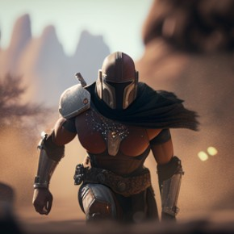
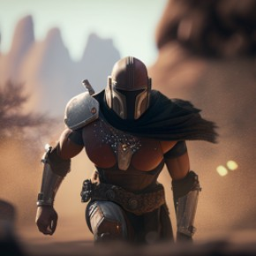

The worlds best franchise
A community fan page
Welcome to our Star Wars fan page! This page is dedicated to all things Star Wars, apart from the sequels.
Whether you're a lifelong fan of the franchise or just starting to explore the galaxy far, far away, this page is the perfect place for you.
Join us as we discuss the latest news, theories, and debates about the Star Wars universe. May the Force be with you
The Clone Wars
Character Bios
Best Fan Art
 


Fan Theories
Propaganda and a one sided story?
The entire saga is anti-imperial propaganda funded by the ridiculously well heeled and well equipped 'rebellion'. The old republic was overthrown because they were corrupt, Palpatine was a senator disgusted with the corruption and the power given to the unelected jedi order, marching around telling people how to use the force. He heroically rose up and defeated the evil Jedi, sacrificing his health to harness the dark side. When his apprentice Anakin was brutally left for dead, only Palpatine was prepared to rescue him and save his life, mercifully sparing him the knowledge he had caused the deaths of his children. Palpatine maintained a Senate and poured immense amounts into defending the galaxy, until erstwhile members of the corrupt republic that he swept away returned to threaten the stable and prosperous Empire. Palpatine attempted to shorten the conflict with a pre-emptive strike at a planet filled with rebels, Alderaan, before discovering the exact location of the rebel base. Due to espionage, the rebels exploited a weakness in his new space station and destroyed it, along with the millions of soldiers and civilians who called it home. This strengthened Palpatine's resolve; the galaxy could never know peace and prosperity while this rebellion continued. His forces pursued the rebel high command across the galaxy, desperately trying to arrest and imprison them, but they repeatedly fled. Eventually, after beginning the construction of a new space station, he saw an opportunity to isolate the rebel commanders in space where he could destroy them with the minimum human risk, catching them in a trap. Eventually, a rebel commander succeeded in mentally torturing Anakin into murdering Palpatine, whereby the corrupt republic is reinstated to continue it's reign of terror, but not before commissioning a series of propaganda films that contort the truth and sully the legacy of the Emperor. The Jedi return to continue their reign of terror as overlords of a weak and corrupt republic, although those brave warriors, loyal to the democratically elected Emperor vow too remain a thorn in the side of the republican regime. If the Empire were really so evil, why did they need so few stormtroopers to police such a wretched hive of scum and villainy as Mos Eisley? It's because they were respected, wanted and fair.
Darth Jar Jar Binks?
What if Jar Jar Binks was actually a Sith Lord?
At first glance, Jar Jar Binks seems like a bumbling, comedic sidekick who's more likely to get in the way than save the day. But what if all of that was just an act? What if Jar Jar was actually a highly skilled Sith Lord who was playing the long game?
Consider the evidence: Jar Jar shows up out of nowhere on Naboo, ingratiates himself with the Jedi and the Naboo government, and ends up playing a key role in the events of The Phantom Menace. He's clumsy and goofy, but he also displays incredible agility and strength at times, almost as if he's holding back.
Then there's his behavior during the Senate scenes in Attack of the Clones. Jar Jar is the one who proposes that the Senate grant emergency powers to Palpatine, paving the way for the rise of the Empire. He's also the one who pushes for the creation of the Clone Army, which is later used against the Jedi.
Finally, there's the fact that Jar Jar disappears from the Star Wars universe after Attack of the Clones. He's not mentioned or seen in Revenge of the Sith, and his fate is left unresolved.
So, what if Jar Jar was actually a Sith Lord who was manipulating events behind the scenes, pulling the strings to ensure Palpatine's rise to power? It might sound crazy, but it's not entirely implausible. After all, we've seen Sith Lords use deception and misdirection before, and Jar Jar's antics could easily be a cover for his true motives. Plus, it would explain why George Lucas went to such lengths to create such a universally despised character - he was trying to distract us from the real villain lurking in the background.